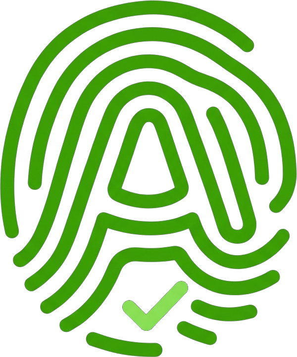

Control biométrico de asistencia institucional, seguimiento al debido proceso formativo y la ingeniería de software real que aprenderás a construir en el SENA.
Tu asistencia se registra con la huella en menos de un segundo, sin llamado a lista de 20 minutos.
Revisa tus inasistencias y tardanzas con tu número de documento desde un portal público.
Radica tu excusa en digital dentro de los 5 días hábiles, desde el celular o el computador.
El portal es responsive: funciona igual de bien en el celular.
Una sola huella identifica al aprendiz entre todos los registrados.
Si se cae internet, el huellero sigue registrando y sincroniza después.
Excusas con plazo, soportes y trazabilidad de cada decisión.
Un robot lleva las novedades a Sofía Plus para evitar la digitación manual.
Electron 30 · Koffi FFI · SDK DigitalPersona
Node 22 · Express · MongoDB Atlas · Socket.IO
Vue 3 · Vite · Quasar 2 · Playwright
Llegaste a tiempo.
Se acumula 1 hora de retardo.
Se acumulan 2 horas de retardo.
Falta de la jornada completa (6 h diurna, 5 h nocturna).
El tiempo se mide desde que el instructor inicia la clase. Si no hay inicio registrado, se toma el horario de la jornada.
Estos rangos están sujetos a las directrices de coordinación académica y pueden ajustarse.
Contados desde la inasistencia para radicar tu excusa en el sistema.
Si el instructor la aprueba, esas horas dejan de contar como inasistencia injustificada.
No se guarda la imagen de tu huella, solo una plantilla matemática (FMD).
Tu huella se registra solo con tu autorización previa, conforme a la ley de protección de datos.
La comunicación viaja cifrada con HTTPS/TLS.
Se guardan con hash bcrypt, nunca en texto plano.
Cada inasistencia queda en espera mientras corre el plazo para radicar la excusa.
El servidor lanza el robot de Playwright, que carga en Sofía Plus lo que ya cumplió el plazo.
El robot guarda capturas de pantalla para que cada carga pueda revisarse.
Vas bien. Sigue asistiendo con regularidad.
Amarillo: 2 inasistencias seguidas o 3 acumuladas.
Rojo: 3 inasistencias seguidas o 5 acumuladas, sin justificar.
ASISTA fue desarrollado por aprendices de ADSO, con apoyo de herramientas de IA, para que el seguimiento de tu formación sea más justo y transparente.